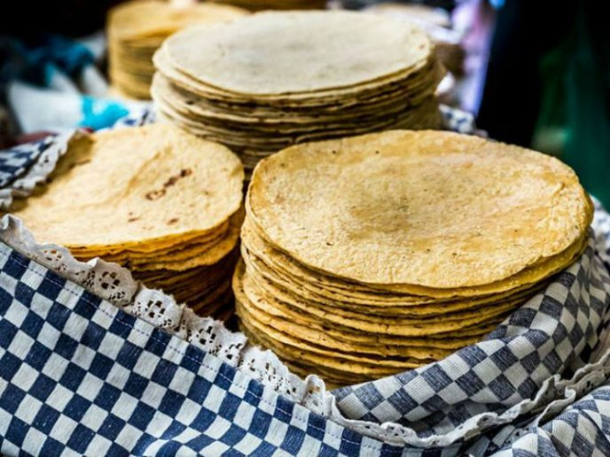

Maize tortilla

Description
An incredible recipe to make your own authentic maize
mexican tortillas. They will look just as white and will
be as unflavorful as possible as to not wildly affect the
flavor of the food you are accompanying it with.
Ingredients
Steps
- Put flour in a bowl and pour warm water
as you mix.
- When dough is ready, grab a piece of it and roll into a ball. Then, flatten the ball as much as possible (do this until you run out of dough)
- Cook flat dough in a pan until ready.